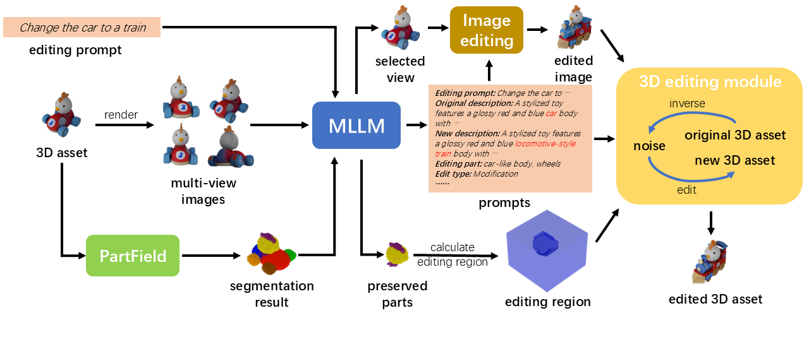

Vinedresser3D: Towards Agentic Text-guided 3D Editingaaa
Yankuan Chi*1
Xiang Li*2
Zixuan Huang2
James Matthew Rehg2
1The Hong Kong University of Science and Technology
2University of Illinois Urbana-Champaign
Text-guided 3D editing aims to modify existing 3D assets using natural-language instructions. Current methods struggle to jointly understand complex prompts, automatically localize edits in 3D, and preserve unedited content. We introduce Vinedresser3D, an agentic framework for high-quality text-guided 3D editing that operates directly in the latent space of a native 3D generative model. Given a 3D asset and an editing prompt, Vinedresser3D uses a multimodal large language model to infer rich descriptions of the original asset, identify the parts to edit and the edit type (addition, modification, deletion), and generate decomposed structural and appearance-level text guidance. The agent then selects an informative view and applies an image editing model to obtain visual guidance. Finally, an inversion-based rectified-flow inpainting pipeline with an interleaved sampling module performs editing in the 3D latent space, enforcing prompt alignment while maintaining 3D coherence and unedited regions. Experiments on diverse 3D edits demonstrate that Vinedresser3D outperforms prior baselines in both automatic metrics and human preference studies, while enabling precise, coherent, and mask-free 3D editing.

Given the original 3D asset and an editing prompt as input, Vinedresser3D employs a multimodal large language model (MLLM) as its core to generate new textual and visual guidance. Additionally, a segmentation model is used to segment the original asset and the MLLM then identifies the intended editing region. Subsequently, Vinedresser3D performs 3D editing using an inversion-based Trellis module, leveraging the provided guidance and identified editing region to produce the final edited asset.
This website's template is adapted from TRELLIS.